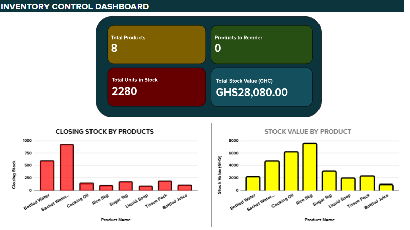
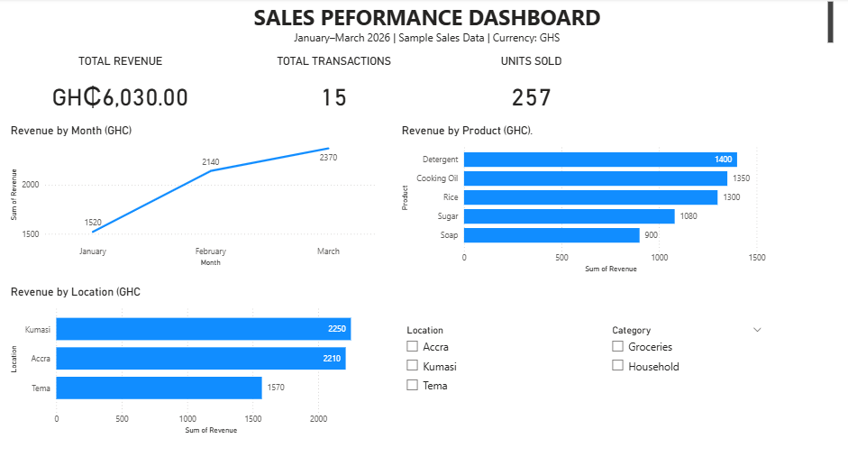
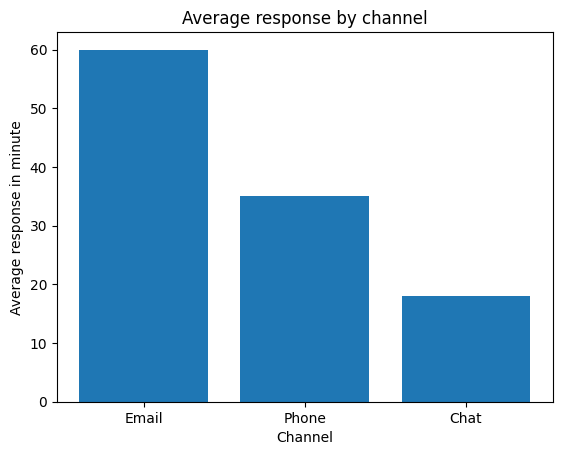

Data analytics
Data cleaning, exploratory analysis, visualization, and communicating findings.
PROFESSIONAL PORTFOLIO · ACCRA, GHANA
I’m Enoch Tettey Commey, a Mathematics and Statistics graduate interested in using data, organized administration, and responsive customer support to help teams work better.
Open to opportunities in data analytics, administration, operations, and customer support.
A LITTLE ABOUT ME
I hold a BSc in Mathematics and Statistics from the University of Ghana. My experience includes administrative support, internal audit support, documentation, record management, and operational work.
I bring a careful approach to handling information, communicating with people, and following processes. I’m developing my portfolio through practical projects that demonstrate data cleaning, analysis, reporting, and service-oriented problem solving.
WHAT I BRING
Data cleaning, exploratory analysis, visualization, and communicating findings.
Document control, correspondence, meeting minutes, report preparation, and accurate record keeping.
Professional communication, handling enquiries, verifying information, and supporting service delivery.
Supporting stock records, tracking movements, checking documentation, and coordinating daily activities.
Tools listed reflect my current skill areas; individual project pages will show the specific tools and methods used.
CAREER JOURNEY
Finance & Administration · National Service
Internal Audit Unit · National Service
Assistant Manager / Cashier-related operations
This section highlights selected experience.
BUILDING EVIDENCE
A practical demonstration built with fictional data, plus planned case studies currently in development.

Excel workbook using fictional records to calculate receipts, issues, returns, closing stock, and closing stock value.
Portfolio demonstration · Synthetic data

Analyzed sample sales data using Microsoft Excel and Power BI to evaluate revenue by product, monthly sales trends, and location performance. Built KPI cards, interactive category and location slicers, and charts to support data-driven decision-making.

Used Python and Pandas to analyze customer enquiry response times, resolution rates, and customer ratings across different channels and categories.
Completed · Fictional dataset
LEARNING & DEVELOPMENT
University of Ghana, Legon
Mathematical methods, statistics, probability, and quantitative reasoning.ALX Africa
Data analytics training and professional development.ALX Africa
Professional skills development.LET'S CONNECT
I’d be glad to discuss opportunities in analytics, administration, operations, and customer support.
CVView or download my CV (PDF) ↗
LinkedInlinkedin.com/in/enoch-commey-571257359
LocationAccra, Ghana
Connect on LinkedIn ↗